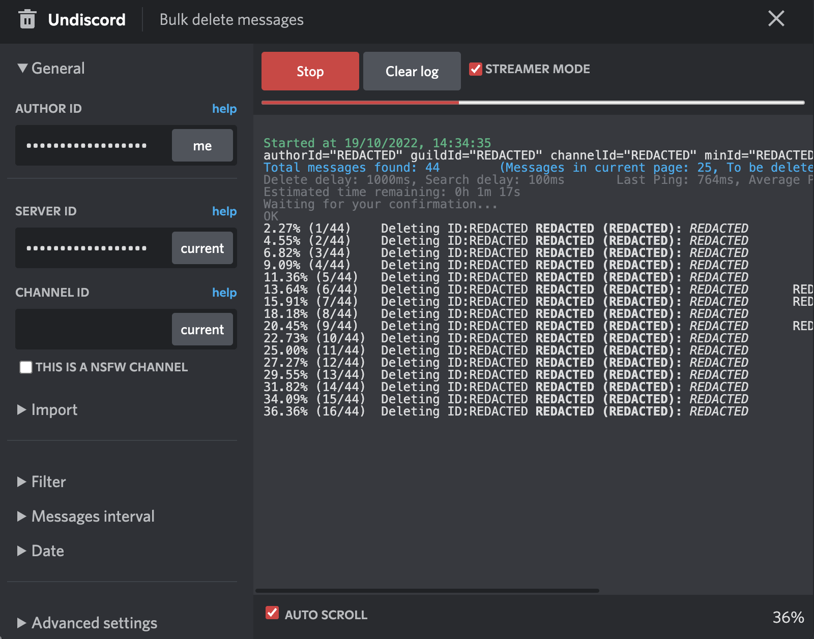

E-Reputation
E-Reputation
E-Reputation
E-Reputation
Here we will focus on the deletion of informations (be it posts, comments, mesages,...) you posted online and have a control over. Thanks to the opensource community you can find all sort of scripts to delete your interactions on social media platforms such as FaceBook, Twitter, Discord,... Here is an example of deleting all traces you left via FaceBook thanks to the script facebook-delete :
basilelt@Basiles-MacBook-Air facebook-delete % go run deleter.go Waiting 100 ms before search and delete requests. ? Please type your email ****************** ? Please type your password *************** Attempting Login... Logged in with user: Basile Le Thiec (profile ID: ***********) ? Which years ? Which months ? Which categories [Use arrows to move, space to select, "right" to all, "left" to none, type to filter] >[*] All App Activity [ ] Comments [ ] Event Invitations [ ] Event Responses [ ] Group Posts and Comments [ ] Group Reactions [ ] Instagram Photos and Videos [ ] Likes and Reactions [ ] Others' Posts To Your Timeline [ ] Photos and Videos [ ] Posts [ ] Posts You're Tagged In [ ] Search History [ ] Spotify [ ] Your Events Searching elements from 2022: Jan Feb Mar Apr May Jun Jul Aug Sep Oct Nov Dec Elements found: 45 Deleting elements from 2022: 45 / 45 [----------------------------------------------------] 100.00% 2 p/s 24s Event Invitations: 1 deleted Group Posts and Comments: 12 deleted Posts: 2 deleted Search History: 29 deleted Total: 44 deleted Searching elements from 2021: Jan Feb Mar Apr May Jun Jul Aug Sep Oct Nov Dec Elements found: 53 Deleting elements from 2021: 53 / 53 [----------------------------------------------------] 100.00% 1 p/s 40s Group Posts and Comments: 18 deleted Others' Posts To Your Timeline: 2 deleted Posts: 19 deleted Search History: 12 deleted Total: 51 deleted Searching elements from 2020: Jan Feb Mar Apr May Jun Jul Aug Sep Oct Nov Dec Elements found: 97 Deleting elements from 2020: 97 / 97 [----------------------------------------------------] 100.00% 2 p/s 43s Comments: 10 deleted Event Invitations: 1 deleted Event Responses: 11 deleted Group Posts and Comments: 9 deleted Group Reactions: 12 deleted Likes and Reactions: 41 deleted Others' Posts To Your Timeline: 7 deleted Posts: 3 deleted Total: 94 deleted Searching elements from 2019: Jan Feb Mar Apr May Jun Jul Aug Sep Oct Nov Dec Elements found: 571 Deleting elements from 2019: 571 / 571 [------------------------------------------------] 100.00% 5 p/s 1m45s Comments: 27 deleted Event Invitations: 3 deleted Event Responses: 29 deleted Group Reactions: 94 deleted Likes and Reactions: 349 deleted Posts: 15 deleted Total: 517 deleted
You can even find scripts that have a Graphical User Interface for easier use such as the TamperMonkey script undiscord :
Started at 31/10/2022, 15:47:36 authorId="REDACTED" guildId="REDACTED" channelId="REDACTED" minId="REDACTED" maxId="REDACTED" hasLink=false hasFile=false Total messages found: 9066 (Messages in current page: 25, To be deleted: 25, System: 0) offset: 0 Delete delay: 1000ms, Search delay: 100ms Last Ping: 4173ms, Average Ping: 4173ms Estimated time remaining: 13h 2m 14s Waiting for your confirmation... OK ... 0.23% (21/9066) Deleting ID:REDACTED REDACTED (REDACTED): REDACTED 0.24% (22/9066) Deleting ID:REDACTED REDACTED (REDACTED): REDACTED 0.25% (23/9066) Deleting ID:REDACTED REDACTED (REDACTED): REDACTED REDACTED 0.26% (24/9066) Deleting ID:REDACTED REDACTED (REDACTED): REDACTED 0.28% (25/9066) Deleting ID:REDACTED REDACTED (REDACTED): REDACTED Searching next messages in 100ms... Total messages found: 9065 (Messages in current page: 21, To be deleted: 21, System: 0) offset: 0 Delete delay: 1000ms, Search delay: 100ms Last Ping: 1385ms, Average Ping: 668ms Estimated time remaining: 4h 12m 39s 0.29% (26/9066) Deleting ID:REDACTED REDACTED (REDACTED): REDACTED ... Being rate limited by the API for 5915ms! Adjusted delete delay to 5915ms. Delete delay: 5915ms, Search delay: 100ms Last Ping: 203ms, Average Ping: 347ms Cooling down for 11830ms before retrying... ...